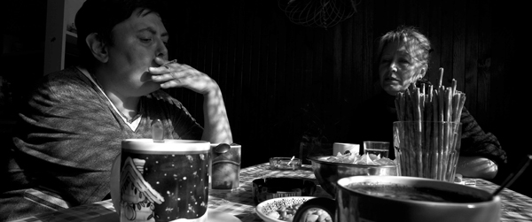
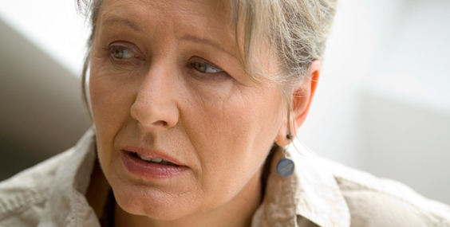

Directed by Helena Trestikova; Czech Republic; 2007; 80 minutes

Pittsburgh Premiere
Awards
* 2007 Seville Film Festival- Best European Documentary
* 2008 CRONOGRAF Film Festival, Moldova- Grand Prize
* 2007 Ismailia International Film Festival- Best Documentary
* 2007 Lubuskie Film Summer- Honorable Mention Award
* 2007 at Finale Plzen Film Festival; Plzen, Czech Republic- Best Czech Documentary
If reality TV were real, it would be Marcela. If reality TV were about the real struggles of individuals, rather than pinning five polar opposite personalities against each other, then reality TV could be Marcela. In an ambitious, made-for-TV series, director Helena Trestikova not only continued to film Marcela, but she became a fixture in Marcela’s life, tracking her from her optimistic engagement, to crammed living with her in-laws, to a failed marriage and the downward spiral of her personal life. Yet, Marcela fights to reach for the next knot when others would reach the end, unraveled fibers of their ropes. However, this is not a Discovery Channel, hands-off, director-subject relationship. Trestikova collects time with thoughtful intercessions while challenging conventional ideas of where a director draws the line and how an audience intercedes.
Presented in conjunction with Robert Morris University Center for Documentary Production & Study
Supported by the Czech Center in New York

Helena Trestikova
Born in the centre of Prague, Trestikova originally had visions of being a costume designer and an artist, but the tumultuous era of 1968 caused her to make the life-altering and documentary-altering decision to become a filmmaker instead. After studies at the famed FAMU film academy of Prague, she began working for Czechoslovak television in the early 1970s. When her husband, an architect, began producing her films, Trestikova was free to devote her focus to the long-term, observational and interactive documentary methods for which she is now gaining international recognition. Beginning in 1980 she embarked on an extensive documentary journey in a film cycle called Marital Scales for Czechoslovak television. The program followed six married couples and their families between 1980 and 1987. The series was a grand success, placing the featured subjects into Czechoslovak homes and lives and boosting Trestikova to one of the most popular directors in the country and a director at the forefront of the idea of “time collection.” Additionally, Trestikova served as the Minister of Culture for the Czech Republic in 2006-2007.